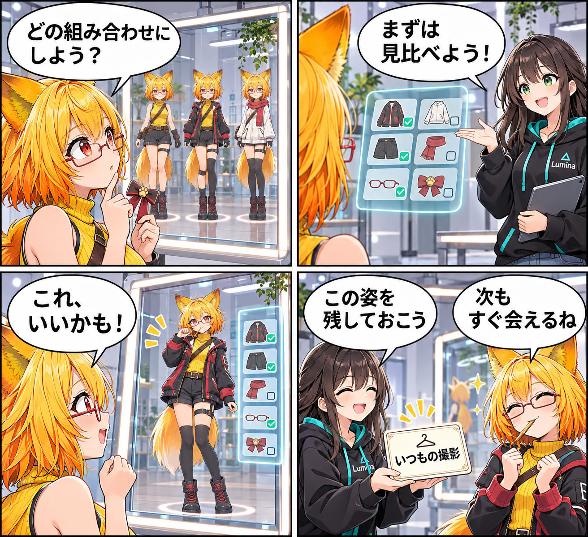

2026.11.22 / Development Log / Feature Spotlight
閑話休題：着せ替えの迷いを、表示でほどく
新規実装の報告ではなく、VRASに既にあるアバターパーツの表示切替と表示プリセットを紹介します。組み合わせを見比べ、選んだ姿を次の撮影へ持っていくための入口です。
今回は feature-spotlight（機能紹介） です。集計期間は2026-11-21 03:00:00 JSTから2026-11-22 02:59:59 JSTまで、対象はViewerの
main です。集計終了時点のHEADは c33733a41be121b814a1732df8c9eae089ace2ea、期間内コミットは0件でした。Assets/Scenes/MainScene.unity の未コミット差分は、期間内に実装された事実を確定できないため実績には含めていません。
試着の前に、組み合わせを見くらべる
VRASでは、読み込んだアバターのパーツをRenderer単位または階層単位で表示・非表示にできます。衣装などの階層を展開し、個別のパーツを切り替えながら、いま撮りたい組み合わせを見つけられます。
迷った状態も、プリセットに残せる
パーツとMaterial Slotの表示状態は、アバターごとのVRAS管理プリセットとして保存し、あとから適用できます。撮影用、普段の姿、比較用などを、そのときの表示状態として呼び戻せます。
表示を変えるための仕組み
表示切替は既存のアバターパーツ表示の仕組みを通して行われます。対象は管理されたパーツとMaterial Slotであり、任意のHierarchy pathやUnityのObject IDを直接指定する操作ではありません。
4コマの話
ろひは鏡の前で衣装の組み合わせを決めきれず、ルミナは「消すより、見比べよう」と提案します。パーツを一つずつ切り替えて気に入った姿が見つかったら、その状態をプリセットに残して、次の撮影へ持っていきます。
まとめ
VRASのパーツ表示と表示プリセットは、アバターの見た目を試し、選んだ状態を再利用するための既存機能です。今日は新規実装の報告ではなく、迷いながら選ぶ時間を軽くする入口を取り上げました。